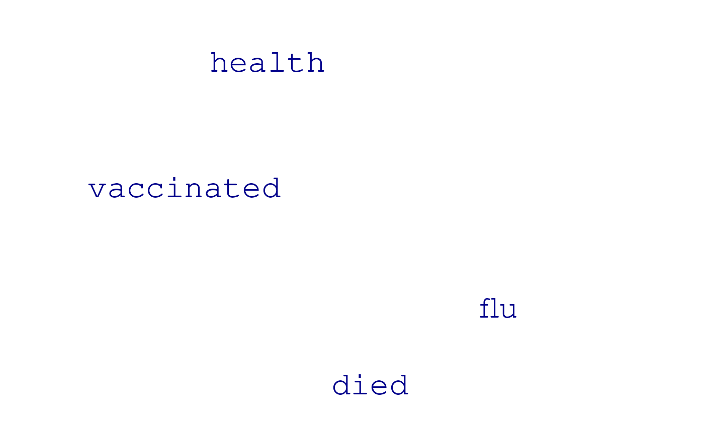
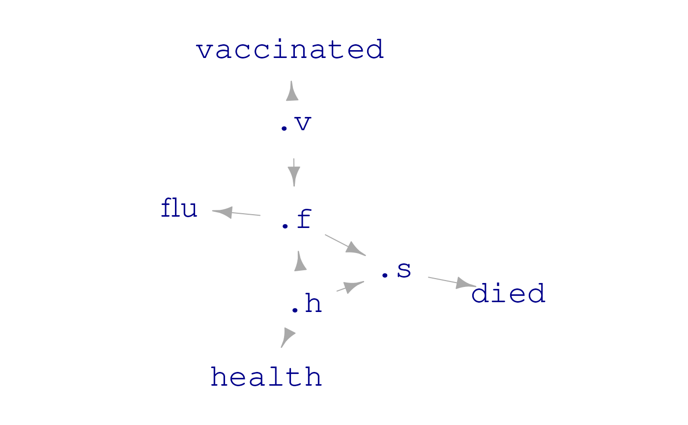

Instructors often hear that students should work with “real” data, that is, data from actual observations or experiments. Such “real” data is used throughout Lessons in Statistical Thinking and serves several purposes: motivating students, creating verisimilitude, and exercising the statistical thinking skill of recognizing that one’s findings from data may not reflect the reality that created the data.
But there is also an important use for “unreal,” simulated data. The user-defined rules of the simulation stands for reality, providing a chance to see if the results of analyzing the data correspond with that reality. Another way to say this is that the use of simulated data allows one to look at accuracy and bias. As well, simulations provide a direct way to observe sampling variation, since a given simulation can be run multiple times.
In the {LST} package, data simulations are provided by a
handful of purpose-written functions, particularly
datasim_make() and datasim_run(). Simulation
is always a two-step process: (1) create the rules by which the
simulation works and (2) apply those rules using random-number
generators to generate data. To illustrate the process, consider a very
simple simulation in which a random x is generated, which
is used to produce a y by a linear transformation of the
x. The two simulated variables are then packaged as a data
frame.
Example1 <- datasim_make(
x <- rnorm(n, mean = 0, sd = 2),
y <- -3 + 10 * x + rnorm(n, mean = 0, sd = 5)
)
Example1 |> take_sample(n=6, seed = 101)
#> # A tibble: 6 × 2
#> x y
#> <dbl> <dbl>
#> 1 -0.652 -6.43
#> 2 1.10 7.49
#> 3 -1.35 -11.9
#> 4 0.429 0.171
#> 5 0.622 5.85
#> 6 2.35 16.5Example1 is a simulation with two rules: x
is a random normal variable (with the specified mean and standard
deviation) and y is an arithmetic transformation of
x.
For readers interested in details, we’ll explain in @sec-why-datasim why the choice was taken to arrange things as this two-step process. For the present, however, we will continue without worrying about the design choices.
Basics of datasim_make()
Each of the rules of a simulation is written in the syntax of an
ordinary R statement. Within any one simulation objects, each rule must
have a unique name. For example,
x <- rnorm(n, mean=0, sd=2), is a perfectly ordinary R
statement, storing under the name x the rule
rnorm(n, mean=0, sd=2).
datasim_make() is a function; the
simulation rules are given as arguments to the
function, that is, in parentheses and separated by commas.
But there are three aspects of using datasim_make() that
are entirely out of the ordinary. First, the name is given to each of
the rules using the storage arrow (<-) as opposed to the
usual = syntax for named arguments. Using =
will generate an error, like this.
Wrong_way <- datasim_make(x = rnorm(n, mean=0, sd=2)) # don't use =
#> Error in datasim_make(x = rnorm(n, mean = 0, sd = 2)): Use the storage arrow `<-` (not the equation sign `=`) in arguments to datasim_make().Second, the quantity n does not need to
be defined previously; it will be defined in the sampling phase.
Third, a rule may make use of a name (like x) only when
that name has been used for a previous rule. For instance, the second
rule in Example1 is y <- -3 + 10 * x and
uses the x defined in the first rule. More rules, each with
its own unique name, can be added that make use of x and
y.
Once a set of rules has been collected using
datasim_make(), the simulation can be run as many times as
you like.
Example1 |> take_sample(n = 3)
#> # A tibble: 3 × 2
#> x y
#> <dbl> <dbl>
#> 1 2.86 24.6
#> 2 -2.93 -36.6
#> 3 -0.473 -7.44
Example1 |> take_sample(n = 2)
#> # A tibble: 2 × 2
#> x y
#> <dbl> <dbl>
#> 1 -1.64 -20.2
#> 2 -4.10 -40.5
# and so onPre-defined simulations
Although students or instructors may create their own simulations
using datasim_make(), they will want to get started using
some of the pre-defined simulations that come with the
{LST} package. These are named with the prefix
sim_, as in sim_00, sim_01, …,
sim_12, sim_vaccine, and so on.
There are two ways to see what are the rules of these predefined simulations.
- Print out the rules, e.g.
print(sim_04) # One of the simulations in {LST}
#> Simulation object
#> ------------
#> [1] a <- rnorm(n)
#> [2] b <- rnorm(n)
#> [3] c <- rnorm(n)
#> [4] d <- a + b + c + rnorm(n)- Draw a graph of the connections between rules,
e.g. in
dag_04ruledreceives inputs froma,b, andc, but none of those other rules are connected to one another.
dag_draw(sim_04)
The term for the mathematical graphs corresponding to data simulation rules is “directed acyclic graph” (DAG, for short).
Introducing causality
The rules of a data simulation form a network; some variables depend
on others. In mathematics, networks are often represented by
graphs, that is, systems with nodes and edges
connecting the nodes. In data simulations, each rule specifies the
inputs (if any) on the right-hand side of <- and how
those inputs specify the value of the variable named on the left-hand
side of <-. In other words, data simulations correspond
to the mathematical idea of a directed graph.
But not all directed graphs are admissible. For instance, the following statement attempts to make a simulation with two variables, each of which sets the values of the other.
cycle <- datasim_make(x <- y, y <- -x)
#> Error in igraph::topo_sort(datasim_to_igraph(sim, report_hidden = TRUE)): At vendor/cigraph/src/properties/dag.c:125 : The graph has cycles; topological sorting is only possible in acyclic graphs. Invalid valueThe mathematically oriented reader may be tempted to interpret the
above as a set of differential equation, for instance the
similar looking
.
The differential equation is a legitimate mathematical object and has
solutions, that is
and
.
And in the differential equation,
clearly influences
and vice versa. Or, to be precise, the present$ value of
influences the future values* of
.
(For R functions pertaining to differential equations, see the
mosaicCalc package, which is not related to
{LST} other than by authorship and affiliation with
[Project MOSAIC]{https://www.mosaic-web.org/}.)
In a data simulation, in contrast, the rows in the output data are
all independent realizations of the simulation rules. For instance, in
sim_04 (graphed above), for each row a value of
a is generated autonomously (“exogenously”), as are the
values of b and c. The d variable
for that row is the arithmetic sum a + b + c with a bit of
exogenous noise added as well.
The problem with the proposed simulation cycle is that
to find x for a row, you must first know y,
and to find y for a row, you must already know
x. In order to avoid the impossible situation of a cycle in
a data simulation, each successive rule can depend only on the rules
that come before it. Such a network is called acyclic:
without cycles. Consequently, data simulations correspond to Directed
Acyclic Graphs (DAGs).
As you may know, DAGs play an important role in statistical causal inference. Consequently, DAGs are an important theme in Lessons in Statistical Thinking.
Data simulations can be useful in teaching causal concepts. To
illustrate, consider the sim_vaccine simulation provided by
the {LST} package. The simulation is a cartoon about how
flu vaccinations might reduce mortality from the flu. We can look at
sim_vaccine in the usual ways:
print(sim_vaccine)
#> Simulation object
#> ------------
#> [1] died <- bernoulli(logodds = .s, labels = c("yes", "no"))
#> [2] vaccinated <- bernoulli(logodds = .v, labels = c("none", "yes"))
#> [3] health <- bernoulli(logodds = .h, labels = c("poor", "good"))
#> [4] flu <- bernoulli(logodds = .f)
dag_draw(sim_vaccine)
To judge from the graph, which shows no arrows, there are no
connections among the four variables involved in the simulation. This is
a good starting point for a classroom discussion of how the four
variables might be connected in the real world. Different people have
different opinions about this, for example, “vaccine deniers” might
insist that vaccination causes health to deteriorate. A
person more in touch with medical science would see that vaccination
effects the chances of getting the flu, and depending on the person’s
health a person with the flu is more likely to die.
We can run the simulation and model the resulting data to see if the data show any connections among the four variables. For instance, it’s easy to simulate a study with 10,000 participants whose baseline health is measured and then are observed: do they get vaccinated, do they get the flu, do they die?
sim_data <- sim_vaccine |> take_sample(n = 10000)Modeling the data helps us address questions of interest. For instance, is vaccination associated with reduced odds of getting the flu?
sim_data |> model_train(flu ~ vaccinated) |> conf_interval()
#> Waiting for profiling to be done...
#> # A tibble: 2 × 4
#> term .lwr .coef .upr
#> <chr> <dbl> <dbl> <dbl>
#> 1 (Intercept) -0.0933 -0.0361 0.0210
#> 2 vaccinatedyes -1.35 -1.26 -1.18The negative coefficient on vaccinated indicates that
vaccination (in the simulation) is associated with lower odds of getting
the flu. Similarly, getting the flu is associated with dieing:
sim_data |> model_train(zero_one(died, one="yes") ~ flu) |> conf_interval()
#> Waiting for profiling to be done...
#> # A tibble: 2 × 4
#> term .lwr .coef .upr
#> <chr> <dbl> <dbl> <dbl>
#> 1 (Intercept) -2.21 -2.13 -2.05
#> 2 flu 0.177 0.302 0.426The positive coefficient on flu demonstrates the
association: getting flu means larger odds of dieing.
You might wonder how associations are formed among the variables in the simulation when the graph has no edges connecting them. You can write your own simulation to verify that unconnected variables almost always produce a confidence interval that includes zero. Only about 5% of such simulation runs will result in a confidence interval not including zero. These runs lead to Type I errors.
The reason for the associations seen in the sim_vaccine
data is that there are in fact connections, but they involve variables
in the simulation that aren’t being reported in the data, so called
“lurking” variables. Unlike the real world, in the simulation we can
look at such variables
print(sim_vaccine, report_hidden = TRUE)
#> Simulation object
#> ------------
#> [1] .h <- rnorm(n, sd = 1)
#> [2] .v <- 0.2 + 2 * .h + rnorm(n, sd = 0.25)
#> [3] .f <- -0.5 - 0.5 * bernoulli(logodds = .v) - 1 * .h
#> [4] .s <- 2 - 0.2 * bernoulli(logodds = .f) + 0.4 * (.h + 0.5)
#> [5] died <- bernoulli(logodds = .s, labels = c("yes", "no"))
#> [6] vaccinated <- bernoulli(logodds = .v, labels = c("none", "yes"))
#> [7] health <- bernoulli(logodds = .h, labels = c("poor", "good"))
#> [8] flu <- bernoulli(logodds = .f)
dag_draw(sim_vaccine, report_hidden = TRUE)
The variables health, vaccinated,
flu, and died are merely readouts of internal
variables .h, .v, .f and
.s. Dots starting a variable name are what keeps those
variables hidden, until revealed by the
report_hidden = TRUE argument.
The hidden variables are a nest of connections. For example, better
health (.h) makes vaccination (.v) more
likely.
To generate simulated data that includes the hidden variables, use
the report_hidden=TRUE argument to
sample().
In a proper clinical trial, vaccination would be assigned at random,
or maybe even blocked with respect to health, age, …. As it stands,
sim_vaccine is an observational study. To create a
randomized clinical trial—that is, an experiment—we would need to
intervene to set .v. This can be done with the
datasim_intervene() function, which allows us to specify
new rules and modify existing ones. Like this:
Randomized_trial_sim <- datasim_intervene(sim_vaccine, .v <- c(-5, 5))
dag_draw(Randomized_trial_sim, report_hidden = TRUE)
Note how the graph of RCTdiffers from the graph of that
of sim_vaccine: there is now no direct connection between
the health variable and vaccination. Generating data from the randomized
clinical trial and modeling the connections between the flu variable
(.f) and the vaccinated variable (.v) shows a
much smaller connection between vaccination and the flu than was seen
with the observational data generated by sim_vaccine.
RTdata <- Randomized_trial_sim |> take_sample(n=10000, report_hidden = TRUE)
RTdata |> model_train(.f ~ .v + .h) |> conf_interval()
#> # A tibble: 3 × 4
#> term .lwr .coef .upr
#> <chr> <dbl> <dbl> <dbl>
#> 1 (Intercept) -0.751 -0.750 -0.749
#> 2 .v -0.0496 -0.0495 -0.0493
#> 3 .h -1.00 -1.00 -0.999Of course, sim_vaccine is just a simulation and may not
accord with how things work in the real world. But if the real world
were like sim_vaccine, we would be able to untangle the
confounded connections by running the experiment. Such untangling can
also be done by the appropriate choice of covariates in a model.
Why datasim_make()?
Many textbooks that use R simulations arrange the code as a sequence
of R statements. For instance, the simulation Example1
shown at the start of this document could be written in three
statements.
This approach is viable in terms of the numbers generated for
x and y, but it has several shortcomings.
- The variables have not been assembled in a data frame, so graphing, summarizing, and modeling of the variables has to be done accordingly.
- There is no name for the simulation itself, so referring to a simulation or comparing simulations with different rules is awkward.
- Repeated runs of the simulation are tedious and book-keeping has to be done by hand.
- Analyzing the rules to draw a DAG or to check for cycles is not easy.
datasim_make() and sample() avoids such
problems with a very small minimum of extra code, as seen in
Example1.
Functions for simulation rules
Many of the rules in simulation can be expressed in mainstream R
code. For example, random numbers can be generated with
rnorm(), rexp(), rbinom(), and
the many other such functions provided by the {stats}
package or other packages. Similarly, arithmetic and other mathematical
operations can be written in the ordinary way.
It is convenient, however, to use special functions provided by
{LST} for writing simulations. These functions simplify any
common situations in simulations.
-
categorical()generates specified categorical levels at random. We’ll give examples usingn = 10
n <- 10
color <- categorical(n, "red", "blue", "green")
color
#> [1] "red" "blue" "blue" "red" "green" "red" "green" "green" "blue"
#> [10] "red"By default, each level is equally likely to occur. You can specify probabilities directly using an argument notation:
color <- categorical(n, red = .1, blue = .2, green = .7)
color
#> [1] "green" "green" "green" "green" "green" "green" "green" "blue" "red"
#> [10] "blue"-
bernoulli()generates zero-one variables or two-level categorical variables. The simple default is to make 0 and 1 with equal probability.
flip <- bernoulli(n)
flip
#> [1] 0 0 1 0 0 1 0 1 1 1You can provide labels for zero and one, producing a categorical variable:
flip <- bernoulli(n, labels = c("bad", "good"))
flip
#> [1] "bad" "good" "good" "good" "bad" "good" "bad" "bad" "bad" "good"bernoulli() can also generate outcomes that depend on
other variables, using those variables as either log-odds inputs or
probability [0,1] inputs. See the sim_vaccine presented
above for examples.
-
cat2value()Sometimes you want to use a categorical variable as an input and translate it to numerical values as an output or, for instance, to specify log-odds inbernoulli().
vals <- cat2value(flip, good = 2, bad = -1 )
vals
#> [1] -1 2 2 2 -1 2 -1 -1 -1 2
result <- bernoulli(logodds = vals, labels = c("fail", "succeed"))
result
#> [1] "fail" "fail" "succeed" "succeed" "fail" "succeed" "fail"
#> [8] "succeed" "fail" "fail"If you don’t need vals elsewhere in your simulation, you
can combine the two statements into one:
-
block_by()assigns categorical levels randomly, but arranged in blocks defined by some other variable.
treatment <- block_by(color, levels = c("glue", "nails", "screws"))
treatment
#> [1] "glue" "screws" "glue" "nails" "glue" "screws" "nails" "screws"
#> [9] "glue" "nails"Using these same rules in datasim_make() facilitates
running the simulation multiple times and packing each simulation’s data
as a data frame. To illustrate, it’s hard to see from the
treatment variable alone that it has been blocked by
color. But once the data are in a data frame, we can use
wrangling or modeling to reveal such patterns. (Don’t forget the commas
between the rules! Each rule is an argument to
datasim_make().)
all_together <- datasim_make(
color <- categorical(n, red = .1, blue = .2, green = .7),
flip <- bernoulli(n, labels = c("bad", "good")),
result <- bernoulli(logodds = cat2value(flip, good=2, bad = -1)),
treatment <- block_by(color, levels = c("glue", "nails", "screws"))
)
all_together |> take_sample(n = 20) |> arrange(color)
#> # A tibble: 20 × 4
#> color flip treatment result
#> <chr> <chr> <chr> <dbl>
#> 1 blue bad glue 0
#> 2 blue good nails 1
#> 3 blue good screws 1
#> 4 blue bad screws 0
#> 5 green good glue 1
#> 6 green bad nails 0
#> 7 green bad glue 0
#> 8 green good screws 1
#> 9 green good nails 0
#> 10 green bad glue 1
#> 11 green bad nails 1
#> 12 green bad screws 0
#> 13 green good glue 1
#> 14 green good nails 1
#> 15 green bad screws 0
#> 16 green good screws 1
#> 17 green good nails 1
#> 18 green bad glue 0
#> 19 red bad nails 0
#> 20 red good glue 1In the above data frame, you can see that all the treatments have been assigned as evenly as possible for each of the colors.
-
mix_with()will mix noise with a signal so that the output has the specified R2 and variance.
Mix_them <- datasim_make(
x <- rnorm(n),
y <- mix_with(x, R2 = 0.71, var = 4.35)
)
Dat <- Mix_them |> take_sample(n = 100)
Dat |> model_train(y ~ x) |> R2()
#> n k Rsquared F adjR2 p df.num df.denom
#> 1 100 1 0.7595083 309.4984 0.7570543 0 1 98
Dat |> summarize(var(y))
#> # A tibble: 1 × 1
#> `var(y)`
#> <dbl>
#> 1 4.35The noise being mixed with the signal may incidentally be correlated
with the signal. This leads to R2 varying around the
specified value. You can avoid this variation (not that you necessarily
want to) by providing the optional argument
exact = TRUE.
Doubly stochastic processes
There are many situations where the conditions for a random outcome
are themselves set at random. The bernoulli() process
provides an illustration. Suppose that an outcome ill-vs-healthy is to
be determined at random, but the patient’s general health condition sets
the probability of falling ill. For instance:
Sick_sim <- datasim_make(
health <- rnorm(n, sd=2),
sick <- bernoulli(logodds = health, labels = c("ill", "OK"))
)
Sim_dat <- Sick_sim |> take_sample(n = 1000)
Sim_dat |> point_plot(sick ~ health)
A hallmark of such processes is that the n argument
isn’t needed; the number of random values produced is determined by the
length of an input variable, in this case health.
bernoulli() was written specially to achieve this
behavior. It’s helpful to have a mechanism that will enable any doubly
stochastic behavior. For instance, suppose we want to generate
k a random positive integer and based on k,
another variable y which will be the sum of k
normal processes. It’s tempting to try to write this as follows:
# This won't work!
sum_sim <- datasim_make(
k <- take_sample(c(1, 4, 16, 32, 64, 128), n = n, replace = TRUE),
y <- sum(rnorm(k))
)
sum_sim |> take_sample(n = 5)
#> # A tibble: 5 × 2
#> k y
#> <dbl> <dbl>
#> 1 128 2.37
#> 2 1 2.37
#> 3 4 2.37
#> 4 64 2.37
#> 5 32 2.37This hasn’t performed as might be expected. All the supposedly random
y values are the same. The reason can be seen from the
documentation for rnorm(). When the n argument
to rnorm() is a vector—and k will be a vector
of length n = 5 when the sample is generated—the length of the vector
determines the number of random numbers generated. Consequently,
sum(rnorm(k)) is a simple sum of n random numbers, rather
than a n sums of a varying number of random numbers.
The each() function sets things up so that a separate
calculation is done for each of the n rows in the sample. Each such
calculation draws on the values of the variables for that particular
row. To illustrate:
# This will do what we want!
sum_sim <- datasim_make(
k <- take_sample(c(1, 4, 16, 32, 64, 128), n = n, replace = TRUE),
y <- each(sum(rnorm(k)))
)
sum_sim |> take_sample(n = 5)
#> # A tibble: 5 × 2
#> k y
#> <dbl> <dbl>
#> 1 4 -1.32
#> 2 32 14.9
#> 3 32 0.862
#> 4 64 -2.63
#> 5 16 1.39We would need a bigger sample to see the k dependence of
y:
sum_sim |> take_sample(n = 10000) |>
point_plot(y ~ k, point_ink = 0.1)